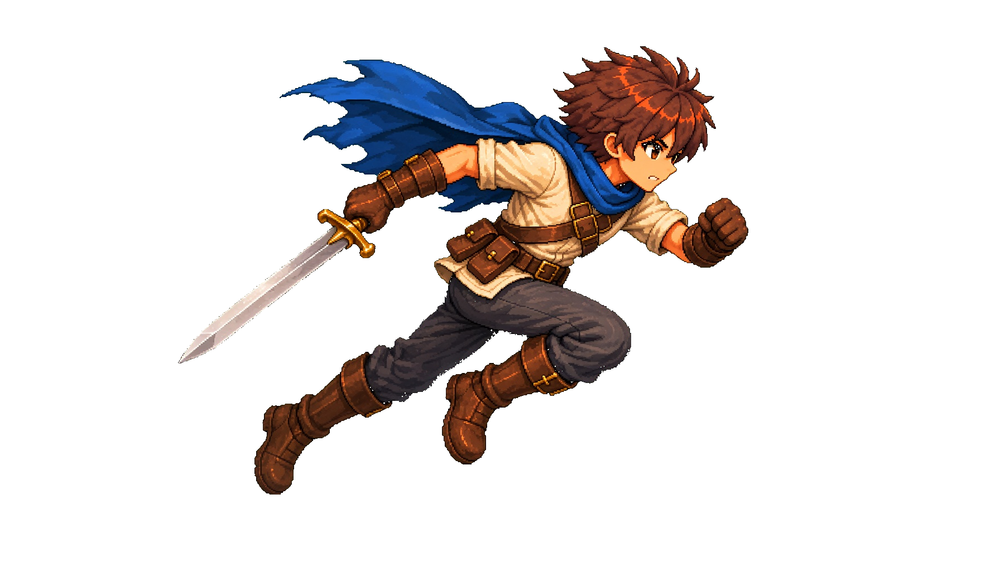

Right-facing sword attachment guide — unapproved
GUIDE ONLY. Swordless body motion remains the motion authority. This preview validates the asymmetric weapon arm, one sword axis, canonical rear hand, and hand occlusion intent. It is not final art and must not be integrated into Unity.

Current frame: